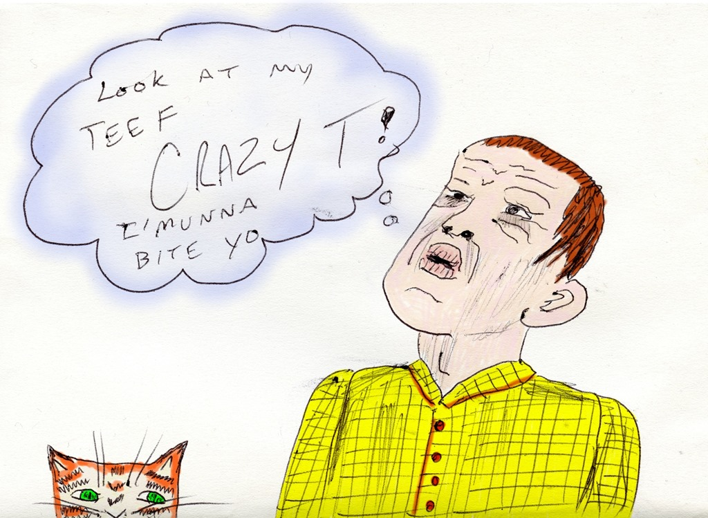

I'll Never Look at Brains the Same Again

“The Oracle” where a select group is asked to answer unknown questions and to ask unanswerable questions. These are submitted to the Oracle to extract their truths.
Oracle we ask you: Whose got your brain meat?
Oracle says: You got the same damn thing yours just aint poked out yet.
Photo by brain_blogger 
Related posts

He Attracted Ugly Women... The Look on Their Faces Is Priceless
"Snippets with Racter" quoted from our conversations with the artificial intelligence simulator Racter (authored by William Chamberlain and Thomas Etter;…

Look at my teef. I'munna bite yo
I finally colorized the birthday card Bixby drew for me last year.

Why You'll Never Succeed at 6400mg Advil Overdose
This is “Ask the Doctor” where readers ask questions of the world renounced general practitioner Dr. Charles V. Fullerton. Dear…

Wall Raccoons Can't Stop the Meat Bun Shirt Lookbook
EMToast contributor Toe Fu has taken on an ambitious photo project for video game shirt company Meat Bun. He's got…